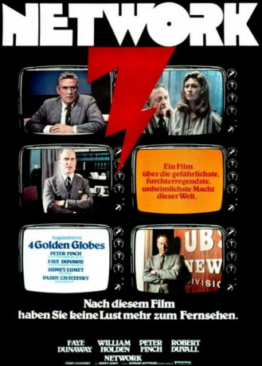
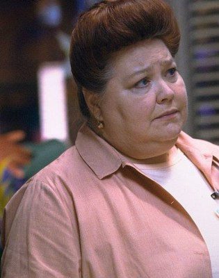

#5768 Network
Auszeichnungen: 4 Oscars gewonnen für 6 Oscars nominiert 4 GoldenGlobes gewonnen 1 BAFTA-Awards gewonnen
 
 IMDB-Wertung: 8.1 / 10
IMDB-Wertung: 8.1 / 10  IMDB-TOP-Platzierung: 194
IMDB-TOP-Platzierung: 194  Tomatometer: 92
Tomatometer: 92  Metascore: 0
Metascore: 0 
Der langjährige Nachrichtensprecher Howard Beale soll wegen sinkender Quoten gefeuert werden. Vor laufender Kamera macht er sich in einem wütenden Ausbrucht Luft - und promt jagt seine Rage die Ratings in die Höhe. Natürlich wird er sofort wieder eingestellt und als "zorniger Prophet" vermarktet. Doch was tun, sobald der Prophet keinen Profit mehr bringt? Es muss etwas geschehen! Am besten während einer Live-Sendung - vor Publikum.
Jahr: 1976
Dauer: 121 Minuten
FSK: 16
Land: USA Studio: MGMTonspuren:
Untertitel:
Auflösung: 1080p (1920x1072) Größe: 8325 MB
Genre: Drama
Regisseur:  Sidney Lumet
Sidney Lumet
Drehbuch: Joseph Oriolo
Soundtrack:
Darsteller:
 Faye Dunaway als Diana Christensen
Faye Dunaway als Diana Christensen William Holden als Max Schumacher
William Holden als Max Schumacher- Peter Finch als Howard Beale
 Robert Duvall als Frank Hackett
Robert Duvall als Frank Hackett Wesley Addy als Nelson Chaney
Wesley Addy als Nelson Chaney Ned Beatty als Arthur Jensen
Ned Beatty als Arthur Jensen- Jordan Charney als Harry Hunter
-  Conchata Ferrell als Barbara Schlesinger
- Cindy Grover als Caroline Schumacher
- Darryl Hickman als Bill Herron
- Ken Kercheval als Merrill Grant
 Kenneth Kimmins als Associate Producer
Kenneth Kimmins als Associate Producer- Roy Poole als Sam Haywood
 William Prince als Edward George Ruddy
William Prince als Edward George Ruddy Lane Smith als Robert McDonough
Lane Smith als Robert McDonough- Ted Sorel als Giannini
- Beatrice Straight als Louise Schumacher
- Fred Stuthman als Mosaic Figure
 Walter Cronkite als Himself , archive footage, uncredited
Walter Cronkite als Himself , archive footage, uncredited- Betty Ford als Herself , archive footage, uncredited
 Gerald Ford als Himself , archive footage, uncredited
Gerald Ford als Himself , archive footage, uncredited Lance Henriksen als Network Lawyer at Khan's Place , uncredited
Lance Henriksen als Network Lawyer at Khan's Place , uncredited- Howard K. Smith als Himself , archive footage, uncredited
- Michael Tucker als Man at Desk , uncredited
- Arthur Burghardt als Great Ahmed Kahn
- Bill Burrows als TV Director
- John Carpenter als George Bosch
- Kathy Cronkite als Mary Ann Gifford
 Ed Crowley als Joe Donnelly
Ed Crowley als Joe Donnelly- Jerome Dempsey als Walter C. Amundsen
- Gene Gross als Milton K. Steinman
- Stanley Grover als Jack Snowden
- Mitchell Jason als Arthur Zangwill
- Paul Jenkins als TV Stage Manager
- Lynn Klugman als TV Production Assistant
- Carolyn Krigbaum als Max's Secretary
- Zane Lasky als Audio Man
- Michael Lipton als Tommy Pellegrino
- Michael Lombard als Willie Stein
- Pirie MacDonald als Herb Thackeray
- Russ Petranto als TV Associate Director
- Bernard Pollock als Lou
- Sasha von Scherler als Helen Miggs
- Cameron Thomas als TV Technical Director
- Marlene Warfield als Laureen Hobbs
- Lydia Wilen als Hunter's Secretary
- Lee Richardson als Narrator
- John Chancellor als Himself , archive footage, uncredited
- Andrew Duncan als Agent , uncredited
- Todd Everett als Reporter , uncredited
Datei: X:\1976\Network (1976, FSK16, 1920x1072).mkv seit 20.03.2017
Festplatte: HD 1971-1979
 Es gibt insgesamt 31 Filme in der Gruppe '1976'
Es gibt insgesamt 31 Filme in der Gruppe '1976'